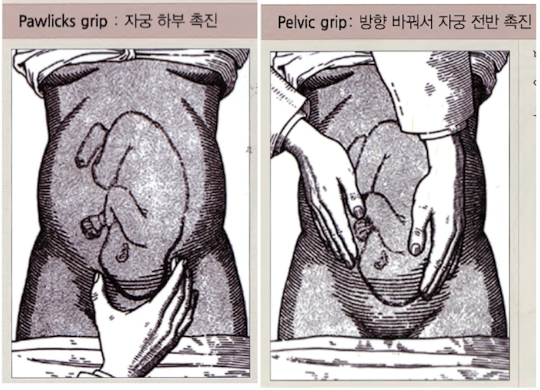
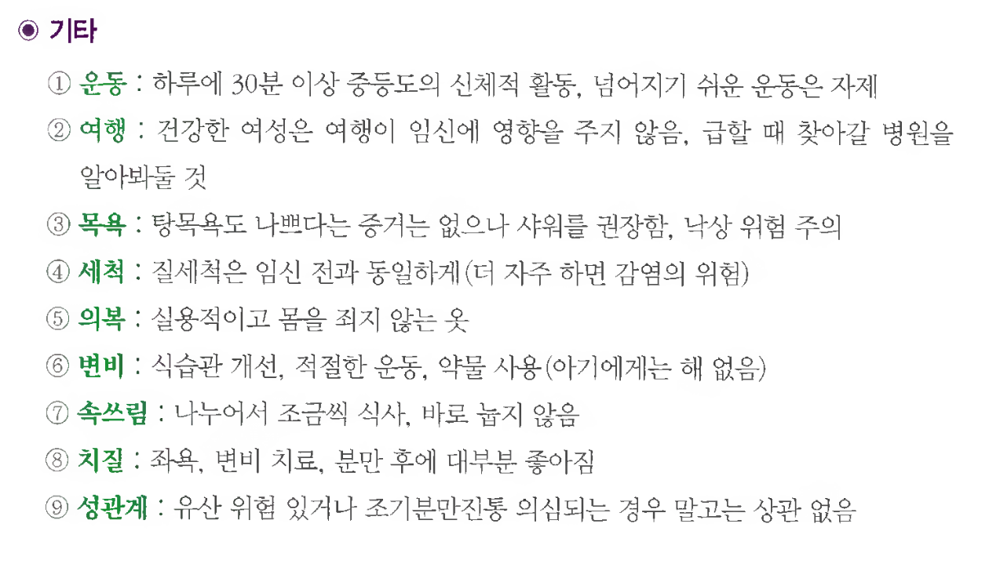

24. 산전진찰
증상이 있으면 각 증상에 대한 평가도 필요 (L D Co Ex C 간단하게)
원인 | |||
정상 임신 |
| ||
임신합병증 | 절박유산 | ||
고위험 임신 | 고령산모 | ||
평가목표 1) 산전 진찰이 필요한 산모에게 병력청취와 신체진찰을 통해 모체와 태아의 건강한 상태를 구별하여 정기적인 산전관리 일정을 세울 수 있음 2) 치료가 필요한 산모 감별 | |||
구체적인 성과 | |||
병력 청취
| 임신여부, 현재 임신주수, 분만예정일 확인 | [임신여부] 임신반응검사 언제, 소변검사 키트에서 두 줄 확실히 보였는지 [현재 임신주수] [분만예정일] LMP 확인 -> 월 -3/+9 일+7 | |
| 임신의 정상반응 vs 비정상 증상 | [정상반응] 1. 초기: 입덧(구역/구토), 유방 압통(유선 발달), 피로 2. 중기: 허리통증, 가벼운 부종 (자궁 무게중심 이동 및 혈액량 증가) 3. 후기: 빈뇨, 숨참 (태아가 방광과 횡격막 압박), 가진통
[비정상 증상 - 위험증상] 질출혈(유산, 태반조기박리), 하복부의 심한 복통(주기적, 찌르는 듯 – 유산 / 지속 - 박리) 심한 두통, 시야 흐림, 급격한 부종, 우상복부 통증(간 손상) – 전자간증, 임신 고혈압 고열(감염), 물 같은 질분비물(양막 파수), 태동 강도/빈도 저하 | |
| 산모와 태아의 건강상태 확인 | [키/체중] [월경력] 규칙적/주기/기간/월경량/월경통 [산과력] 만조유생(TPAL), 자연분만/제왕절개(이유) [주산기] 이전 임신 시 산모 질환 / 출산 시 문제 / 유전병, 선천기형 자녀 있는지 [수술력] 부인과 시술/수술: 자궁 수술(근종, 제왕) 확인 -> 분만 방식 결정 [과거력] 기저질환: HTN, DM, 갑상샘, 알레르기, 뇌질환 등 [약물력] 경구피임약 / 엽산 (임신 전~초기까지) / 철분제(임신 20주 이후부터) [사회력] 술담커 / 직업 (방사선, 유해물질 등 환경적 위험요소 있는지, 어린아이 돌보는지?) [가족력] 선천 기형 / 유전 질환 [예방접종] 풍진, B형간염 (임신 3개월 전 완료했어야)
| |
| 임신 분기별 비정상 징후 확인, 설명 | 1삼분기: 심한 질출혈(유산), 심한 하복부 통증(자궁외임신), 심한 구토, 38℃ 이상 고열 2삼분기: 통증 없는 질출혈(전치태반), 급격한 부종, 투명한 물 같은 질 분비물 3삼분기: 태동의 급격한 감소/소실(태아 가사), 심한 두통/시야장애/상복부통증(혈압↑), 지속적이고 딱딱한 복통(태반조기박리) | |
신체 진찰 | 임신 단계 / 분만 진행단계 확인하는 골반진찰 | [골반내진] 1. 질과 자궁의 구조적 이상, 통증, 분비물 평가 2. 자궁경부 개대(cm), 소실(%), 하강도(ischial spine (0) 기준 아래 +1~+5/위 -1~-5), 태위, 태향, 양막 파열 등 확인 | |
| 태아와 임신 단계 확인하는 복부진찰 | Leopold maneuver: 태아의 위치 파악 | |
| 태아의 심음상태 확인 | 도플러 초음파로 태아 심박수 확인 (보통 초음파 기계 제공하는 경우는 거의 없으므로 신체 진찰 시 언급만 하면 소견 적힌 종이 제공) | |
진단 및 치료 | 삼분기별 검사계획 | 처음 방문 시 | 혈액검사(CBC), 소변검사(단백뇨), 소변배양검사(세균뇨), 혈액형(ABO, Rh), B형간염 항원/항체검사, 매독검사, 풍진 항체검사, HIV 검사 |
|
| 매 방문 시 | 산모 혈압, 체중, 자궁 크기, 수축 정도, 태아 심박수, 태아 움직임, 출혈 및 양막 파열 유무 |
|
| 제1삼분기 (~14주) | 8주~ 초음파(태아 및 태아 심박동 확인) 11~14주 목둘레투명대 측정(태아 염색체 이상 선별검사) 10~13주 (유전질환 가족력 or 목덜미투명대↑) 융모막융모생검 – 침습적 |
|
| 제2삼분기 (15~28주) | 16~20주 양수검사(염색체 이상 확진검사) 20~24주 정밀초음파 검사(해부학적 구조 이상 확인) 24~28주 임신성 당뇨 선별검사(50g OGTT) 28주 Rh- 산모에게 적혈구항체검사 시행하고 면역글로불린 투여 |
|
| 제3삼분기 (29~출산) | 초음파 |
| 추후 진료계획 | 정기적 산전관리 계획 28주까지는 4주마다, 36주까지는 2주마다, 그 이후부터는 매주 검사 | |
| 합병증 있는 임신의 관리계획 | [전자간증] 1. 혈압 조절, 간/신기능/혈소판수치 정기검사 2. 황산마그네슘 (경련 예방) 3. 산모/태아 상태 악화 시 주수 상관없이 분만
[임신성 당뇨병] 1. 혈당 모니터링, 식사요법 -> (당 조절X) 인슐린 2. 목표 혈당: 공복 ≤ 95 / 식후 1시간 ≤ 140 / 식후 2시간 ≤ 120 | |
환자교육 | 임신 중 필요한 영양소 공급 | 1. 엽산: 임신 전 ~ 임신 초기 / 하루 400 μg씩 / 엽산 부족 시 태아 신경관 결손 (척수를 둘러싼 척추 및 피부에 결함이 생겨 신경조직이 노출되는 것) 2. 철분제: 임신 20주부터 / 하루 30mg | |
| 생활습관 교육 (흡연 등) | 1. 술 담배 절대 금지 2. 병원 진료 받을 때 반드시 현재 임신 중임을 알리기 3. 식이요법 1) 임신 전 기간에 걸쳐 먹고 싶은 음식 골고루 먹기 2) 임신 초기 입덧 심해 잘 못 먹는 경우 많으나 대부분 별 문제 없음. 적은 양 여러번 먹기 But 산모 체중 감소, 소변량 감소 수준이면 수액치료 3) 임신 후반 6개월 동안 1kg 단백질 보충 필요 (하루 5~6Kg) | |
| 임신 중 약물복용, 신체운동, 성생활, 예방접종 교육 | 1. 약물복용: 꼭 의사와 상담 2. 신체운동: 매우 피로하거나 임신에 영향 줄 정도가 아니면 운동/직장생활 제한할 필요X 가벼운 조깅, 산책 정도 운동은 아기, 산모 모두에게 좋음 3. 성생활: 분만 전 4주 ~ 분만 후 2주까지 금욕 4. 예방접종: 생백신 접종 절대 금기 (MMR, Varicella, Polio PO 등) | |
윤리 | 태아 성감별에 대한 법적인 규정을 설명할 수 있다 | ||
PPI | 환자가 수치심을 느끼지 않도록 배려할 수 있다 | ||
임상술기 | 산부인과 진찰(분만 진행 단계 진찰, 자궁경부펴바름 검사, 질 분비물 검사) | ||

질환 | 병력청취 | 질환 설명 | 검사 | 치료 | |
산모 건강 상태 | 입덧 1+1 | 구역, 구토 식욕부진, 음식물에 대한 기호 변화 | 병이라기보다는 일종의 생리적인 현상 임신 11-13주에 가장 심하고 대부분 14-16주면 사라짐 | 전해질검사 | 식습관 교정 탈수 심하면 수액 |
| 고령 임신 | 35세 이상 |
| 선별검사 X, 융모막 융모 표본채취/양수천자 | 산전 관리 철저 |
| 임신 고혈압 0+1 / 전자간증 2+1 | 부종, 두통, Rt. 상복부 통증, 시야장애 | 임신 20주 이후 새로 발생한 고혈압, 단백뇨 없음, 분만 후 정상화 분만 12주 후에도 정상화되지 않으면 만성고혈압 | 혈액검사(빈혈, 혈소판 수치, 신기능), 소변검사(단백량), 간기능검사 | 경과관찰, ≥160/110 시 고혈압약 |
|
|
| 임신고혈압+단백뇨/두통/시야흐림/신,간기능↓ |
| 혈압약, 경련예방약 34주 이상 – 분만 |
| 임신 당뇨병 | 소변검사에서 당이 나옴 | 임신 전에는 없던 당뇨병이 임신 20주 이후에 생긴 것. 출산하면 혈당 돌아옴 | 경구 당부하검사+당화혈색소 | 식이요법, 인슐린 |
출산 | 유산 | 질출혈 | 절박유산: 임신 20주 이전 자궁경부 닫혀있는 상태에서 질출혈이 있는 것 계류유산: 자궁경부가 닫혀있는 상태로 사망한 임신 산물이 자궁 내에 남아있는 것 | 질초음파+혈중 hCG+혈청FSH | 절대 안정 태아 죽어서 계류유산 시 약물치료(자궁수축, 임신산물 배출 돕는 약) / 자궁소파수술 |
| 태반 조기 박리1+1 / 전치태반 1 | 과도한 질출혈 복통(+) 조기박리 복통(-) 전치태반 | 박리: 태반이 분만 전에 먼저 떨어진 것 전치: 자궁 위쪽에 있어야 하는 태반이 비정상적으로 아래로 내려와 자궁경부 입구 근처/위에 부착된 상태 | CBC+질초음파+복부초음파 | 수혈, 응급제왕절개수술 |
| 조기 양막 파수 1
| 물같이 흐르는 질분비물 나옴 | 양막파수: 진통 전에 양막이 파열되어 양수가 흐르는 것
| 자궁경부검사 니트라진검사: 질 분비물이 양수인지 확인 비수축검사(NST): 아기 심박수와 움직임을 확인 | 24주 미만- 생존가능성 없음 24~34: 스테로이드+ 항생제 34주 이상 진통있으면 분만 + 항생제 |
| 조기 산통 1+1 | 조기에 규칙적 산통 | 만삭이 되기 전(20주~37주)에 규칙적 자궁수축과 함께 자궁경부가 열리는 것
| 자궁경부검사 비수축검사(NST): 아기 심박수와 움직임을 확인 | 34주 이전: 스테로이드 + 자궁수축억제제 (48시간까지 delay)
34주 이후 그냥 분만 |
인사/손씻기/환자확인/비밀보장 | |||||
O | <정상임신> 임신반응검사 언제 -> 소변검사 키트에서 두 줄 확실히 보였는지 원하는 임신 (준비해서 한 임신)? LMP -> 출산예정일 계산 (월 -3/+9, 일 +7) | <출혈/복통/입덧/분비물/전자간증(두통)> (증상 호소하는 경우) 언제부터 증상 있었는지 임신 몇 주이신가요? | |||
L |
| ||||
D |
| ||||
Co |
| ||||
Ex |
| ||||
C =여 | [산모평가] 키 / 체중 / 혈액형(아빠도) / 예방접종(HBV 수두 풍진) [월경력] 규칙적/주기/기간/월경량/월경통 [산과력] 만조유생(TPAL) (몇 주에 유산/조산), 자연분만/제왕절개(이유) [성관계] 유무 / 성관계 후 질출혈, 질분비물 / 성교통 [주산기] 이전 임신 시 산모 질환 / 출산 시 문제 / 유전병, 선천기형 자녀 있는지 [피임] 피임하고 있었나요 -> 어떤 방식 | ||||
A | [OPEN] 다른 불편한 곳은 없으세요? 암기법: 응전 유산소 전자갑당 | ||||
| 전신 | 발열 / 오한 / 피로 / 체중변화 / 부종 | |||
| 응급 | 어지럼증 / 호흡곤란 | |||
| 유산 | 질출혈 / 질분비물 -> 색 / 양 / 통증 / 물같은분비물 r/o 유산, 박리, 파수 복통 -> L위치(하복부, 우상복부) / D지속or주기적 / C양상, NRS / Co 심해지는지 태동 감소 (태동은 20주경부터 느껴짐) | |||
| 소화기(입덧) | 구역 / 구토 r/o 입덧 | |||
| 전자간증 | 두통 / 시야흐림 / 거품뇨 r/o 전자간증 | |||
| 갑상샘 | 더위불내성 / 두근거림 / 체중감소 | |||
| 당뇨 | 다음 / 다뇨 / 다갈 | |||
F |
| ||||
E | 건강검진 – 결과 / 산부인과 검진 (자궁경부검사) / 이전 산전진찰 -> 얼마나 자주 or 왜 안 했는지 6개월 내 X-ray, CT 찍은 적 있는지 | ||||
외 | 부인과 시술/수술(근종, 제왕절개) | ||||
과 | HTN / DM / 갑상샘 / 알레르기 / 뇌전증 / 성병(매독, 임질, 에이즈) | ||||
약 | 약물 (경구피임약, 엽산 임신 2달 전~임신 4개월, 철분 임신 20주 이후) | ||||
사 | 술담커 / 직 (어린아이 돌보는지, 방사선, 유해물질 접촉) / 식사 / 스트레스 / 운동 / 해외여행 | ||||
가 | 선천 기형 / 유전 질환 | ||||
PEx | 동의 구하기 손 씻기 | ||||
| 기본 | V/S 확인 (혈압, 맥박, 호흡수, 체온) 1 눈: 빈혈, 황달 + 전자간증 의심 시 시야검사 2 입: 탈수 3 목: 갑상샘 촉진 4 사지 : 피부 긴장도, 오목부종 | |||
| 복부 | 1분기) 복부진찰 - 골반진찰 / 2, 3분기) 레오폴드 모형 위에 복부진찰 - 분만진행단계 복부: 시-청-타-촉 | |||
| 분만 진행 단계 (2분기 이상) | 검사 설명 동의구하기 손씻기 | 1. 산모에게 태아 상태 평가를 위한 검사를 하겠다고 말하고 동의 구하기 * 복부진찰(태아 위치 확인) – 도플러 초음파(태아 심박수 평가) – 골반진찰(자궁경부 개대 및 소실 정도, 태아 선진부, 양막 파열 여부 확인) 2. 손위생 후 임신부의 우측에 선다. (남자는 반드시 여성 보조자 대동) 3. 양해 구하고 치골 부위 가려주면서 누운 상태에서 복부 노출 | ||
|
| Leopold maneuver | 1. 임신부의 다리쪽에서 머리를 바라보고 Fundal grip -> Umbilical grip -> Pawlicks grip 2. 반대 방향(머리 쪽에서 다리를 바라보고 Pelvic grip
 | ||
|
| 도플러 초음파 | 1. 도플러 초음파를 켠다 2. 초음파 잘 되는지 송수신기에 젤 짠 후 내 손목(맥박 뛰는 곳)에 대보기 3. 태아의 머리에 가까운 등쪽에 송수신기 대기 (레오폴드 umbilical로 확인한 등 방향) 4. 태아의 심음을 약 10초 청취 (주로 cephalic 주므로 하복부에서 듣기) 5. 임신부 배에 묻은 젤 닦아주고 여분 휴지 주기 6. 측정한 분당 심박수 알려주기 (10초간 들은 거 x 6) | ||
|
| 골반진찰 | 1. 손위생 -> 소독 솜 준비 -> 장갑을 무균적으로 착용 2. 임신부에게 쇄석위(lithotomy position)로 눕도록 양해 구함 3. Forcep으로 소독솜 집고 외음부를 요도 -> 항문 방향으로 소독 (바깥쪽 2회 -> 대음순 벌리고 2회 소독) 4. 장갑 낀 오른손에 젤 묻힘 5. 소음순에 손 닿는다고 말하고 왼손으로 소음순 벌린 뒤, 오른손 집게/가운데 손가락을 질강 내로 삽입 (약 45도 아래로 향하도록 한 후 진입) 6. 자궁경부 개대(dilatation), 소실(effacement) 평가, 태아 선진부(presentation) 확인 7. 좌우 ischial spine을 이은 선을 기준으로 태아의 하강 정도(station) 확인 8. 태향(fetal position) 확인 – sagittal suture를 찾은 후 선 따라서 끝까지 이동해 ant.(♢)/post. fontanelle(ㅅ) 확인 -> post. fontanelle 있는 곳이 뒤통수 9. 양막 파열 여부 확인 (비닐봉지 같은 막 있으면 파열X) 10. 질에서 손가락 빼고 장갑 벗어서 폐기 | ||
|
| 마무리 손씻기 | 1. 검사 결과 보고 – 자궁경부 개대 O cm / 소실 정도 O % / 태아 하강도 – 5 ~+5 Vertex Breech Face position / 양막파열 2. 상황에 맞는 치료 및 관리 계획 설명 3. 불편한 점, 궁금한 점 있는지 4. 손 씻기 | ||
| Pap/Wet | 질출혈 / 질분비물 있을 때 | |||
| 협조해주셔서 감사합니다. 불편한 건 없으셨나요? 손씻기 | ||||
| 기본!!
| 혈액검사(CBC, 전해질, 혈당, 간수치) 소변검사 (임신반응검사) 초음파검사 | |||
| 정상임신 | 처음 방문 시 | 혈액검사(CBC), 소변검사(단백뇨), 소변배양검사(세균뇨), 혈액형(ABO, Rh), B형간염 항원/항체검사, 매독검사, 풍진 항체검사, HIV 검사 | ||
|
| 매 방문 시 | 산모 혈압, 체중, 자궁 크기, 수축 정도, 태아 심박수, 태아 움직임, 출혈 및 양막 파열 유무
| ||
|
| 제1삼분기 (~14주) | 8주~ 초음파(태아 및 태아 심박동 확인) 11~14주 목둘레투명대 측정(태아 염색체 이상 선별검사) 10~13주 (유전질환 가족력 or 목덜미투명대↑) 융모막융모생검 – 침습적 | ||
|
| 제2삼분기 (15~28주) | 16~20주 양수검사(염색체 이상 확진검사) 20~24주 정밀초음파 검사(해부학적 구조 이상 확인) 24~28주 임신성 당뇨 선별검사(50g OGTT) 28주 Rh- 산모에게 적혈구항체검사 시행하고 면역글로불린 투여 | ||
|
| 제3삼분기 (29~출산) | 초음파 | ||
| 산모 건강상태 | 고령 임신 | 선별검사 X, 융모막 융모 표본채취/양수천자 | 산전 관리 철저 | |
|
| 임신 고혈압/ 전자간증 | 혈액검사(빈혈, 혈소판 수치, 신기능), 소변검사(단백량), 간기능검사 | 경과관찰, ≥160/110 시 고혈압약 | |
|
|
|
| 혈압약, 경련예방약 34주 이상 – 분만 산모/태아 상태 악화 시 주수 상관없이 분만 | |
|
| 임신 당뇨병 | 경구 당부하검사+당화혈색소 | 식이요법 -> 인슐린 | |
| 질출혈/분비물 | 유산 | 질초음파+혈중 hCG+혈청FSH | 절대 안정 태아 죽어서 계류유산 시 약물치료(자궁수축, 임신산물 배출 돕는 약) / 자궁소파수술 | |
|
| 태반조기박리/전치태반 | CBC+질초음파+복부초음파 | 수혈, 응급제왕절개수술 | |
|
| 조기양막파수/조기 산통 | 자궁경부검사 니트라진검사: 질 분비물이 양수인지 확인 비수축검사(NST): 아기 심박수와 움직임을 확인 | 절대안정, 상황에 따라 출산, 글루코코르티코이드
| |
교육 | 임신을 확인하기 위해서는 기본적으로 혈액검사와 소변검사가 필요하고 자궁 내 임신 여부를 확인하기 위해 질초음파검사가 필요합니다. (임신 확실한 경우) 출산 예정일은 O월 O일입니다. 축하드립니다. 앞으로 정기적으로 병원에 오셔서 산전 관리를 받으셔야 합니다. 28주까지는 4주마다, 36주까지는 2주마다, 그 이후부터는 매주 검사 받으러 오시면 됩니다. 임신 중반기에는 기형아 선별검사를 할 예정이고, 임신 24주 이후 당뇨병 선별검사를 하게 됩니다. 또 방문하실 때마다 OO님의 혈압, 체중을 측정하고 태아 심음을 확인할 것입니다.
[응급] 질출혈, 물처럼 흐르는 질분비물, 지속되는 두통, 시야 흐려짐, 고열, 심한 복통, 태동 강도나 빈도 저하 시 응급 상황이니 바로 병원 내원 [생활습관] 술담식영약운성예 1. 술 담배 절대 금지 2. 영양소 공급 1) 엽산: 임신 전 ~ 임신 초기 / 하루 400 μg씩 부족 시 태아 신경관 결손 (척수를 둘러싼 척추 및 피부에 결함이 생겨 신경조직이 노출되는 것) 2) 철분제: 임신 20주부터 / 하루 30mg 3. 병원 진료 받을 때 반드시 현재 임신 중임을 알리기 4. 식이요법 1) 임신 전 기간에 걸쳐 먹고 싶은 음식 골고루 먹기 2) 임신 초기 입덧 심해 잘 못 먹는 경우 많으나 대부분 별 문제 없음. 적은 양 여러번 먹기 But 산모 체중 감소, 소변량 감소 수준이면 수액치료 3) 임신 후반 6개월 동안 1g/kg 단백질 보충 필요 5. 약물복용: 꼭 의사와 상담 6. 신체운동: 매우 피로하거나 임신에 영향 줄 정도가 아니면 운동/직장생활 제한할 필요X 가벼운 조깅, 산책 정도 운동은 아기, 산모 모두에게 좋음 7. 성생활: 12주까지, 분만 전 4주 ~ 분만 후 2주까지 금욕 8. 예방접종: 생백신 접종 절대 금기 (MMR, Varicella, Polio PO 등)
[절박유산] 절대 안정. 태아가 반드시 죽은 것은 아님을 설명하고 위로하기 [당뇨] 임신 시 정상적으로 요당이 검출될 수 있음. 추가 검사 필요 (갑상샘도 마찬가지) | ||||
마무리 | 다음 진료는 O주 뒤에 하도록 하겠습니다. (28주까지는 4주마다, 36주까지는 2주마다, 그 이후부터는 매주) | ||||
PPI | 궁금하신 점 있으실까요? | ||||


